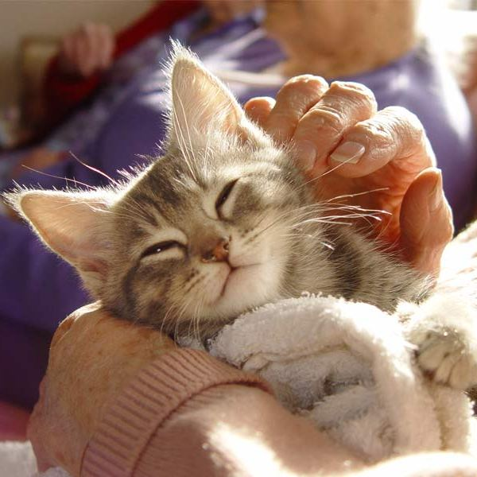
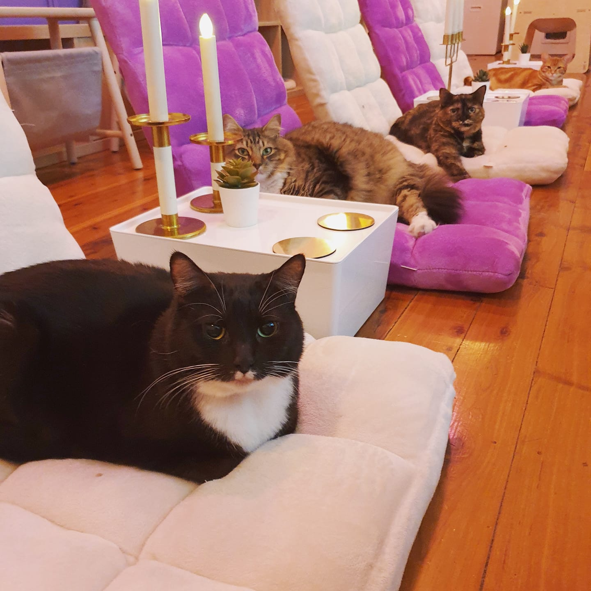
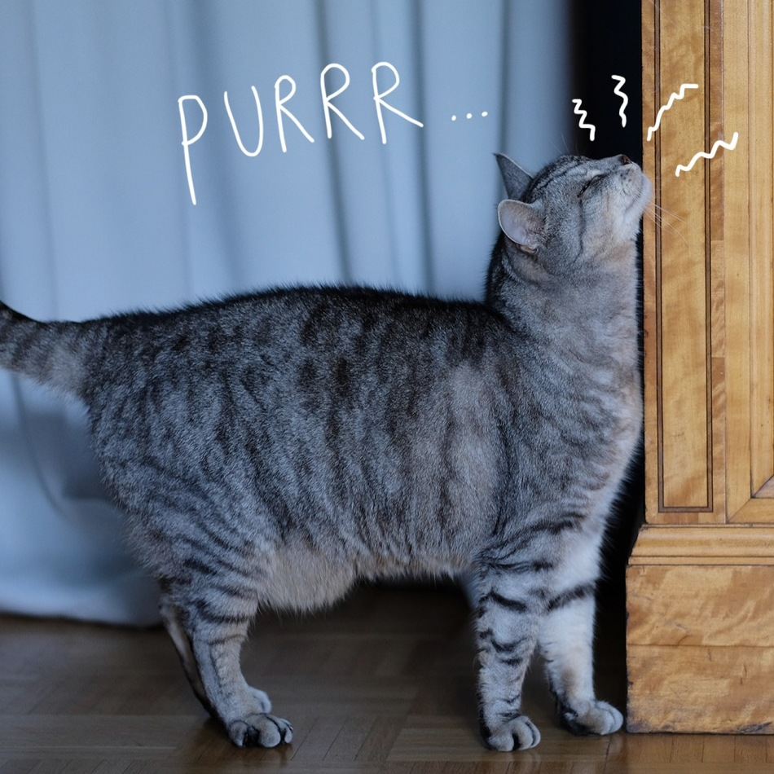
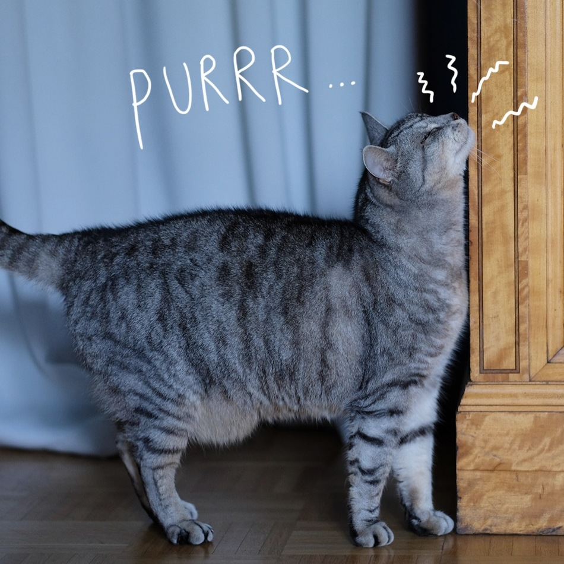

Naše usluge
U Cat Cafe-u nudimo raznolike usluge za sve mačkoljupce!
Cat-uccino Bar 
Ova usluga pruža posjetiteljima priliku da uživaju u jedinstvenom iskustvu ispijanja kave ili čaja u društvu mačaka. Cat-uccino Bar nudi posebne napitke i slastice s mačjim temama, poput "meowchiato" ili "purrfect cake." Gosti mogu uživati u opuštenoj atmosferi, gledati kako mačke slobodno šeću oko njih, i stvarati nezaboravne trenutke uz svoje krznene prijatelje.
Adopt-a-Cat Program 
Kroz ovu uslugu, Cat Cafe sudjeluje u odgovornom udomljavanju mačaka. Posjetitelji koji se zaljube u određenu mačku tijekom posjeta imaju priliku izraziti svoj interes za udomljavanje. Cat Cafe surađuje s lokalnim skloništima i udrugama za zaštitu životinja kako bi olakšao proces udomljavanja. Ova usluga ne samo da pruža dom mačkama kojima je potreban, već i potiče svijest o važnosti udomljavanja životinja iz skloništa.
Cat Therapy Session 
Ova usluga omogućuje posjetiteljima da rezerviraju vrijeme za posebnu seansu mačje terapije. Tijekom ove seanse, posjetitelji imaju priliku opuštati se i smanjiti stres uz pomoć mačaka, poznatih po svojoj terapeutskoj moći. Osoblje će pružiti informacije o svakoj mački, potičući interakciju i pružajući gostima priliku da se povežu s ljubaznim, krznenim terapeutima.
Ostale usluge

Cat Cinema Nights
Cat Art Corner
 

Cat Book Club
Cat Behavior Classes